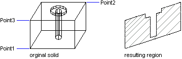

|
SectionSolid Method |
Creates a region that represents the intersection of a plane defined by three points and the solid.
Signature
RetVal = object.SectionSolid (Point1, Point2, Point3)
Object
3DSolid
The object this method applies to.
Point1
Variant (three-element array of doubles); input-only
The 3D WCS coordinates specifying the first point.
Point2
Variant (three-element array of doubles); input-only
The 3D WCS coordinates specifying the second point.
Point3
Variant (three-element array of doubles); input-only
The 3D WCS coordinates specifying the third point.
RetVal
Region object
The resulting section as a region.
Remarks
 |
| Comments? |